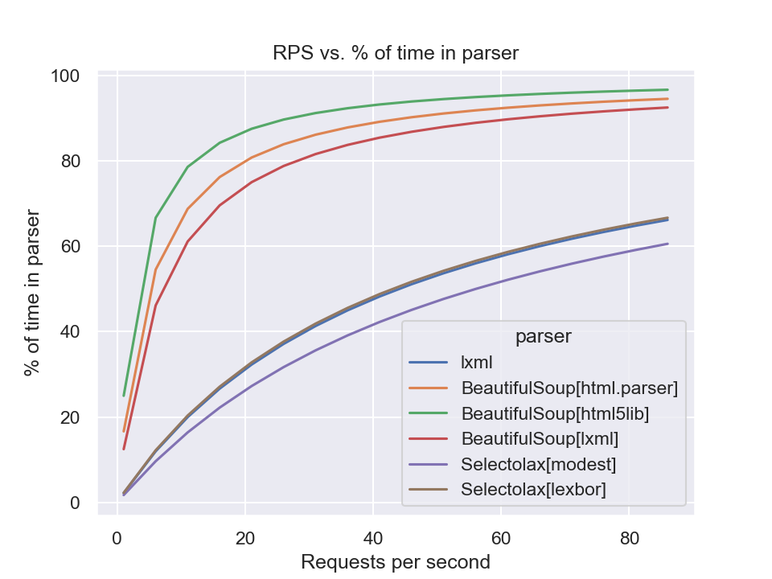

html = """<a data="foo">"""6 Parsing HTML
6.1 Introduction
In this section we’ll be looking at four libraries for parsing HTML:
- Beautiful Soup
- lxml, specifically lxml.html
- selectolax
- and parsel, which is part of the Scrapy framework.
Beautiful Soup
When people talk about Python libraries for writing web scrapers, they immediately go to Beautiful Soup. Nearly 20 years old, it is one of the most well-established Python libraries out there. It is popular enough that I find that people are often surprised to learn there are viable alternatives.
If you look on sites like Stack Overflow, the conventional wisdom is that Beautiful Soup is the most flexible, while lxml is much faster. We’ll be taking a look to see if that wisdom holds up.
It is worth mentioning that Beautiful Soup 4 is a major departure from Beautiful Soup 3. So much so that when installing Beautiful Soup 4, you need to install the beautifulsoup4 package from PyPI.
Furthermore, as of version 4, Beautiful Soup works as a wrapper around a number of different parsers. Its documentation explains how to pick a parser and offers some conventional wisdom about which you should pick. The default parser is html.parser, which is part of the Python standard library. You can also use lxml.html or html5lib. When it comes to evaluating the performance of Beautiful Soup, we’ll try all of these.
lxml.html
lxml is a Python library for parsing XML, and comes with lxml.html, a submodule specifically designed for handling HTML. The library is a wrapper around the libxml2 and libxslt C libraries. This means that it is very fast, but also requires that you have the C libraries installed on your system.
Until recently this was a bit of a challenge, but advances in Python packaging have made this process much easier in most environments.
The conventional wisdom, as mentioned before, is that lxml is fast but perhaps not as flexible as other options. Anecdotally that has not been my experience, Open States switched to lxml around the time of the somewhat fraught Beautiful Soup 4 transition and never really looked back.
Selectolax
There’s also a much newer kid in town, Selectolax. It is a wrapper around a new open source HTML parsing library and claims to be even faster than lxml. It has a much smaller footprint than the other libraries, so it will be interesting to see how it stacks up against the more established libraries.
Parsel
Parsel is a library that is part of the popular Scrapy framework. It is a wrapper around lxml, but provides a very different interface for extracting data from HTML.
Note
These libraries are not exact peers of one another. This is most notable with the way that Beautiful Soup and lxml allow you to use different parsers, and Parsel is itself a wrapper around lxml.
While unusual combinations may exist, most projects will pick one of these and use it for all of their parsing needs, so we’ll be looking at them through that lens.
In this section, we’ll be taking a look at how these libraries stack up against one another.
We’ll try to answer questions like:
- Which library offers the nicest developer experience?
- With Beautiful Soup offering a wrapper around lxml, is there any reason to use lxml directly if you’re using Beautiful Soup?
- Have Python speed improvements negated much of lxml’s performance advantage?
- How does Selectolax stack up against the more established libraries?
- How much does the flexibility of the parsers differ in 2023? Is it worth the performance hit to use html5lib?
To start, we’ll take a look at the features that each offers before evaluating how they perform against one another.
6.2 Developer Experience
When it comes to writing resilient scrapers, the developer experience is perhaps the most important dimension. A nice, clean, and consistent API is an important factor in the cleanliness & readability of your scraper code.
We’ll compare the experience by looking at a few aspects of the developer experience:
- Features
- Complexity
- Documentation
- Common Tasks Compared
It is also worth noting that all of the libraries are permissively licensed (either MIT or BSD) open source libraries. So on that front at least, the developer experience is the same.
6.2.1 Feature Comparison
These libraries are all perfectly capable libraries, each provides HTML parsing as well as various selection mechanisms to extract content from the DOM.
The main differences among them are which methods they provide for selecting nodes, and how they handle text extraction:
| Library | XPath | CSS | DOM Traversal API | Text Extraction |
|---|---|---|---|---|
| lxml | ✅ | ✳ | ✅ | ✅ |
| Beautiful Soup | ❌ | ✅ | ✅ | ✅ |
| selectolax | ❌ | ✅ | ✅ | ✅ |
| parsel | ✅ | ✅ | ❌ | ❌ |
✳ cssselect must be installed separately but augments lxml.html to provide CSS selector support.
Attribute Access
A common feature among all libraries is dictionary-like attribute access on nodes.
Example: Extracting an attribute’s value
import lxml.html
root = lxml.html.fromstring(html)
node = root.xpath('//a')[0]
node.attrib['data']'foo'import bs4
root = bs4.BeautifulSoup(html, 'lxml')
node = root.find('a')
node['data']'foo'from selectolax.parser import HTMLParser
root = HTMLParser(html)
node = root.css_first('a')
node.attributes['data']'foo'from parsel import Selector
root = Selector(html)
node = root.xpath('//a')[0]
node.attrib['data']'foo'Pluggable Parsers
lxml and Beautiful Soup both have parsers and node APIs that are separate from one another. It is technically possible to use lxml.html’s parser with Beautiful Soup’s Node API, or vice versa. Additionally, selectolax allows choosing between two different backend parsers.
This isn’t going to factor into feature comparisons, since each supported parser is equally capable and we’ll be looking at speed & flexibility in other sections.
Having pluggable parsers is a nice feature, but as we’ll see in the rest of this comparison, it might not be as useful as it sounds.
Selectors & DOM Traversal
Once HTML is parsed, there are many ways to actually select the nodes that you want to extract data from. As mentioned in earlier sections, using a selector language like XPath or CSS selectors is preferable, but sometimes you will need to fall back to traversing the DOM.
lxml is an XML-first library, and as such supports the powerful XPath selection language. It also supports the ElementTree API, which is a DOM traversal API. It also supports CSS selectors, but you must install cssselect separately.
parsel, mostly a wrapper around lxml, also supports XPath and CSS selectors treating both as equal. It does not however expose a DOM traversal API of its own.
Beautiful Soup has a custom selector API, and also supports CSS selectors since 4.0. It also has dozens of methods for traversing the DOM.
Selectolax is CSS-first, with no XPath support. It does also provide methods for directly traversing the DOM.
Text Extraction
All of these libraries provide a way to extract text from a node, but the methods differ.
- lxml provides a
text_content()method that will return the text content of a node, including text from child nodes. - BeautifulSoup similarly provides a
.textproperty that will return the text content of a node, including text from child nodes. - Parsel does not actually provide a dedicated way to do this, you can use the
.xpath('string()')method to get the text content of a node, including text from child nodes. - selectolax provides a
.text()method that will return the text content of a node, including text from child nodes.
Example: Text Extraction
<div class="content">
This is some content that contains <em>a little</em> bit of markup.
<br />
We'll see that these inner tags create some <em>problems</em>,
which some libraries handle better than others.
</div>from bs4 import BeautifulSoup
soup = BeautifulSoup(html, 'html.parser')
soup.text"\n\n This is some content that contains a little bit of markup.\n \n We'll see that these inner tags create some problems,\n which some libraries handle better than others.\n\n"import lxml.html
root = lxml.html.fromstring(html)
root.text_content()"\n This is some content that contains a little bit of markup.\n \n We'll see that these inner tags create some problems,\n which some libraries handle better than others.\n"import parsel
sel = parsel.Selector(html)
sel.xpath('string()').get()"\n This is some content that contains a little bit of markup.\n \n We'll see that these inner tags create some problems,\n which some libraries handle better than others.\n"from selectolax.parser import HTMLParser
tree = HTMLParser(html)
tree.text()"\n This is some content that contains a little bit of markup.\n \n We'll see that these inner tags create some problems,\n which some libraries handle better than others.\n\n"Selectolax’s text extraction seems the most sophisticated. Its text method has convinient parameters to strip text and opt between including text from child nodes or not.
parsel & lxml
parsel at this point may seem to be lacking in features. We’ve seen that it does not support DOM traversal, or have a native method for extracting text from a node. It seems fair to note that you can access the underlying lxml object and use its methods, which provides one workaround.
Of course, this is not a very clean solution requiring mixing of two APIs and would break if parsel ever switched to a different underlying library. (This has at least been proposed, but it is not clear it is likely.)
6.2.2 Complexity
At their core, all of these APIs provide a method to parse a string of HTML, and then a node API where most of the work is done. One measure of complexity is taking a look at what methods and properties are available on each library’s node type.
| Library | Class Name | Methods | Public Properties |
|---|---|---|---|
| Beautiful Soup | bs4.element.Tag |
69 | 39 |
| lxml | lxml.html.HtmlElement |
43 | 15 |
| parsel | parsel.selector.Selector |
11 | 6 |
| selectolax | selectolax.parser.Node |
11 | 21 |
This is a somewhat arbitrary measure, but illustrates that parsel and selectolax are concise APIs, perhaps at the cost of some functionality.
Most of the methods and properties that Beautiful Soup provides are for navigating the DOM, and it has a lot of them. When Beautiful Soup came onto the scene, most scrapers did a lot more DOM traversal as XPath and CSS selector implementations were not as mature as they are today.
6.2.3 Documentation
Beautiful Soup has very comprehensive documentation. It has a nice quick start guide and then detailed examples of its numerous features. One thing that becomes obvious when comparing it to the others is that it has a lot of features, it has a large API for modifying the tree, and dozens of methods for various types of navigation (e.g. next_sibling, next_siblings, next_element, next_elements all exist, with the same for previous and each being slightly different from its peers).
As the most widely-used there’s also the advantage of a large community of users and a lot of examples online, but I’d temper that by noting that a large number of examples are old and use outdated APIs.
The pitfalls of popularity
In some ways, Beautiful Soup is a victim of its own success here. Popular libraries tend to accumulate features over time, and it would break backwards compatibility to remove them. With a library as widely used as Beautiful Soup, that can be a significant barrier to change.
Perhaps there will someday be a Beautiful Soup 5 that offers a simplified API.
lxml also has incredibly detailed documentation. The documentation site covers all of the features of lxml, which is a large library that contains many features unrelated to HTML parsing. It is a bit better if you limit your search to the lxml.html module, which is the module that contains the HTML parsing features. Though you may need to look at other parts of the documentation to understand some of the concepts, the documentation for lxml.html is fairly concise and covers most of what you’d need to know.
parsel has a very concise API, and the documentation reflects that. Consisting primarily of a Usage page and an API reference.
The documentation would probably benefit from more examples, especially since parsel’s small API might leave some users wondering where features they’ve come to rely upon in other libraries are. A few more examples of how to replicate common tasks in other libraries would be helpful.
selectolax is another very small API. Like parsel it mainly concerns itself with a small set of methods and properties available on a node type. The documentation is purely-module based and does not include any kind of tutorial or usage guide.
One would hope as the library matures that it will add more documentation, but for now it is a bit bare.
6.3 Speed Comparison
When talking about performance it makes sense to be realistic about the fact that speed is rarely the most important part of choosing a library for HTML parsing.
As we’ll see, most scrapers will be limited by the time spent making network requests, not the actual parsing of the HTML. While this is generally true, it is still good to understand the relative performance of these libraries. We’ll also take a look at when the performance of the parsers can have a significant impact on the performance of your scraper.
To compare these libraries, I wrote a series of benchmarks to evaluate the performance of the libraries.
6.3.1 Parsing HTML
The initial parse of the HTML is likely the most expensive part of the scraping process. This benchmark measures the time it takes to parse the HTML using each library.
Example 6.1: Parsing HTML
root = lxml.html.fromstring(html)root = BeautifulSoup(html, 'lxml')
# or 'html.parser' or 'html5lib'root = selectolax.parser.HTMLParser(html)
# or selectolax.lexbor.LexborParser(html)root = parsel.Selector(html)Results

| implementation | average_time | normalized |
|---|---|---|
| lxml.html | 0.09 s | 4x |
| Parsel | 0.09 s | 4x |
| BeautifulSoup[html.parser] | 1.27 s | 51x |
| BeautifulSoup[html5lib] | 2.47 s | 98x |
| BeautifulSouplxml | 0.92 s | 37x |
| Selectolax[modest] | 0.03 s | 1x |
| Selectolax[lexbor] | 0.02 s | 1x |
Selectolax is the winner here, both engines performed about 4x faster than lxml.html. Parsel, as expected, was about the same speed as lxml.html since it is a thin wrapper around it. BeautifulSoup was much slower, even when using lxml as the parser, it was about 10x slower than lxml.html alone. html5lib was about 20x slower than lxml.html, and nearly 100x slower than Selectolax.
Aside: Smaller Pages
In an earlier draft of the benchmarks, I used a smaller page to test the parsers. The results were similar, but not as dramatic:

Taking a look at a graph with just html5test, it is clear the relative speeds are about the same between the different test pages.
Parsing this page is so much faster than the larger more complex pages used for the rest of the tests that it basically disappeared on all graphs.
6.3.2 Extracting Links
This benchmark uses each library to find all <a> tags with an href attribute. This is a common task for scrapers and given the number of links on the two test pages, should be a good test of the libraries capabilities. The libraries have different ways of doing this, so I used the most natural way for each library based on their documentation.
Example 6.2: Extracting Links (Natural)
# in lxml, XPath is the native way to do this
links = root.xpath('//a[@href]')# in BeautifulSoup, you'd typically use find_all
links = root.find_all('a', href=True)# Selectolax is essentially a CSS Selector implementation
links = root.css('a[href]')# Parsel is a wrapper around lxml, so we'll use xpath
links = root.xpath('//a[@href]')Results

| implementation | average_time | normalized |
|---|---|---|
| lxml.html | 0.0241 | 11x |
| Parsel | 0.0469 | 21x |
| BeautifulSoup[html.parser] | 0.0999 | 44x |
| BeautifulSoup[html5lib] | 0.0998 | 45x |
| BeautifulSoup[lxml] | 0.101 | 44x |
| Selectolax[modest] | 0.00228 | 1x |
| Selectolax[lexbor] | 0.00236 | 1x |
Once again, Selectolax is in the lead. lxml and parsel are close, with parsel’s overhead adding a bit of time. BeautifulSoup is again very slow, it looks to be essentially the same speed regardless of parser. This suggests that once the DOM is parsed, BeautifulSoup is using its native methods for finding nodes, making it slower than a wrapper like parsel that takes advantage of lxml’s underlying speed.
Furthermore, the three BeautifulSoup implementations are virtually identical in speed. This was interesting, it looks like BeautifulSoup is likely using its own implementation of find_all instead of taking advantage of lxml’s faster alternatives.
(It was verified that all implementations gave the same count of links.)
6.3.3 Extracting Links (CSS)
I wanted to take a look at another way of getting the same data, in part to see if it’d level the playing field at all. Not all of the libraries support the same features, but all do support CSS selectors. We’ll be querying for the same data as before, but this time with CSS selectors.
Tip
For lxml to support this feature, it needs the cssselect library installed.
Example 6.3: Extracting Links (CSS)
links = root.cssselect('a[href]')links = root.select('a[href]')links = root.css('a[href]')links = root.css('a[href]')Results

| implementation | average_time | normalized |
|---|---|---|
| lxml.html | 0.0176 | 8x |
| Parsel | 0.0397 | 19x |
| BeautifulSoup[html.parser] | 0.181 | 86x |
| BeautifulSoup[html5lib] | 0.207 | 99x |
| BeautifulSoup[lxml] | 0.183 | 88x |
| Selectolax[modest] | 0.00210 | 1x |
| Selectolax[lexbor] | 0.00233 | 1x |
These results didn’t change much, the main difference is that BeautifulSoup got about twice as slow.
This did show that CSS Selectors are just as fast in lxml as XPath which is good news if you prefer using them.
(It was verified that all implementations gave the same count of links.)
6.3.4 Counting Elements
For this benchmark we’ll walk the DOM tree and count the number of elements. DOM Traversal is just about the worst way to get data out of HTML, but sometimes it is necessary.
parsel
`parsel` doesn't support direct DOM traversal. It is possible to get child elements using XPath or CSS selectors, but it is drastically slower
and didn't feel like a fair comparison since it isn't an intended use case.
It is also possible to use `parsel` to get the underlying `lxml` object and use that to traverse the DOM. If you are using `parsel`
and need to do DOM traversal, this is the recommended approach.Example 6.4: Gathering All Elements
all_elements = [e for e in root.iter()]# BeautifulSoup includes text nodes, which need to be excluded
all_elements = [e for e in root.recursiveChildGenerator() if isinstance(e, Tag)]all_elements = [e for e in root.iter()]# Parsel doesn't support DOM traversal, but here's an
# example of how to get the underlying lxml object
all_elements = [e for e in root.root.iter()]
| implementation | average_time | normalized |
|---|---|---|
| lxml.html | 0.0281 | 1.3x |
| BeautifulSoup[html.parser] | 0.0229 | 1.1x |
| BeautifulSoup[html5lib] | 0.0248 | 1.2x |
| BeautifulSoup[lxml] | 0.0221 | 1.04x |
| Selectolax[modest] | 0.0212 | 1.0x |
| Selectolax[lexbor] | 0.0239 | 1.1x |
The variance here is the lowest of any of the benchmarks. All implementations need to do roughly the same work, traversing an already-built tree of HTML nodes in Python. lxml.html is actually the slowest here, but it seems unlikely node-traversal will be a bottleneck in any case.
6.3.5 Extracting Text
For this benchmark, we’ll use each parser’s built in text extraction function to extract the text from the pages. These functions extract all of the text from a node and it’s descendants and are useful for things like extracting large blocks of plain text with some markup.
Tip
parsel does not have an equivalent function, favoring a different approach to text extraction.
These methods are used to extract all of the text from a block of HTML. This is useful for things like extracting large blocks of plain text with some markup.
For this benchmark in particular, we’ll extract text from each of the <ul> tags on the page.
Example 6.5: Extracting Text
Results

| implementation | average_time | normalized |
|---|---|---|
| lxml.html | 0.00938 | 1x |
| BeautifulSoup[html.parser] | 0.0508 | 5x |
| BeautifulSoup[html5lib] | 0.0536 | 6x |
| BeautifulSoup[lxml] | 0.0506 | 5x |
| Selectolax[modest] | 0.0250 | 3x |
| Selectolax[lexbor] | 0.0237 | 2x |
Here lxml is the clear winner. With fewer <ul> elements on the page, selectolax keeps up, but with the pyindex example the difference becomes more clear.
Additionally, BeautifulSoup[html.parser] and BeautifulSouplxml get different results than the rest:
| Libraries | Size of result for ‘asha_bhosle’ | Size of result for ‘pyindex’ |
|---|---|---|
| lxml.html, html5lib, and selectolax | 2,282 | 740,069 |
| BeautifulSoup[html.parser] and BeautifulSouplxml | 2,270 | 565,339 |
This is a surprising result, and I’m not sure what’s going on here yet.
I’d expected different parse trees, but html5lib For the pyindex example it is notable that html5lib and lxml.html are finding about 200,000 more characters than the other parsers. It’s also quite strange that BeautifulSoup’s lxml parser is finding the same number of characters as the html.parser, and not lxml.html.
I expect the next section where we look at flexibility will shed some light on this.
6.3.6 Real World Scrape
So far we’ve been looking at very simple benchmarks of common methods. It seems clear that lxml.html is the fastest, but how much would that speed matter in a real world scenario?
To simulate a real world scrape, we’ll compose a scrape from the pieces we’ve already done:
- Parse the Python documentation index as a start page.
- For each link on the page, parse the page the link points to. (Note: The index contains many links to the same page, we’ll parse each page each time it is encountered to simulate having many more actual pages.)
- On each of those pages, we’ll perform 3 tasks:
- Extract the text from the root element.
- Count the number of elements on the page by walking the DOM.
- Count the spans on the page using CSS selectors.
This is a fair simulacrum of the work that a real scrape would do. All in all our mock scrape hits 11,824 pages, a moderately sized scrape.
And of course, as before, all of this will be done using local files so no actual network requests will be made. An initial run will warm an in-memory cache, so disk I/O will not be a factor either.
Results
| Parser | Time (s) | Pages/s |
|---|---|---|
| lxml | 266 | 44 |
| BeautifulSoup[html.parser] | 2,292 | 5 |
| BeautifulSoup[html5lib] | 4,575 | 3 |
| BeautifulSoup[lxml] | 1,694 | 7 |
| Selectolax[modest] | 211 | 56 |
| Selectolax[lexbor] | 274 | 43 |
!!! note
Parsel is excluded here because it does not support all the methods used in the benchmark. Since it allows you to use `lxml` under the hood, and the speed was otherwise comparable to `lxml.html`, it is fair to assume it would be comparable to `lxml.html` in this benchmark as well.As is no surprise at this point, Selectolax and lxml.html are the clear winners here with no significant difference between them.
While the exact amount will vary depending on the specific parsers compared, it is fair to say the C-based libraries are about an order of magnitude faster.
If you are able to make more than ~10 requests/second, you might find that BeautifulSoup becomes a bottleneck.
Let’s take a look at how this plays out as we increase the number of requests per second:

As you increase the number of requests per second that you’re able to obtain, the amount of the time spent in the parser increases. As you can see, by 10 requests per second, BeautifulSoup is taking more than half the time, and by 20 requests, it is taking ~80%.
To contrast, lxml.html and selectolax are able to keep up with the increase in requests per second, unlikely to be the bottleneck until you are making 50+ requests per second.
6.4 Memory Comparison
Finally, let’s take a look at how much memory each parser uses while handling the following files:
| Example | Bytes | Tags |
|---|---|---|
| asha_bhosle | 1,132,673 | ~38,450 |
| pyindex | 1,683,137 | ~34,950 |
| html5test | 18,992 | 218 |
This is somewhat difficult to measure, as the memory usage of an object is not easily accessible from Python. I used memray to measure a sample piece of code that loaded each parser and parsed the sample pages.

These results have a lot of interesting things to say about the parsers.
First, BeautifulSoup is typically the least-memory efficient. This is probably not surprising, but it is surprising to see that there is a definite memory tax for using it with the lxml.html parser. This is particularly interesting since lxml.html is the most-memory efficient parser in each test.
parsel performs very well here, with seemingly minimal overhead on top of it’s underlying lxml.html parser.
selectolax looks good, sitting at the midway point between lxml.html and BeautifulSoup. It struggled however with the html5test page, included here with 10x and 100x repetitions to allow for comparison.
It’s interesting to see that selectolax does so poorly here. It’s possible that there is a fixed minimum of memory that selectolax uses for each page, and that the html5test page is so small that it is not able to take advantage of that minimum. In practice this shouldn’t be an issue, as typically only a single page would be loaded at a time, but it still seems worth noting as an unexpected result.
6.5 Does Performance Matter?
One one hand, performance isn’t going to make or break your scrape. If you’re scraping a small number of pages, or are dealing with a slow site or rate limit, the difference between the fastest and slowest parsers is going to be negligible.
In practice, the real payoffs of using a faster parser are going to be felt the most during development of larger scrapers. If you’re using a local cache while scraping (and I hope you are), your requests per second are nearly limitless. This means that the speed of your parser is going to be the limiting factor in how fast you can iterate on your scrape.
In a 1,000 page scrape from cache of pages similar to our final benchmark, a full trial run would take less than 15 seconds while a full trial run with html5lib.parser would take nearly 3 minutes. At 10,000 pages the difference between the shortest and longest is almost half an hour.
Memory usage might also matter to you, if you are running your scraper on a small VPS or have unusually complex pages, memory usage could be a factor and that’s another place where lxml.html shines.
TODO: check numbers for these paragraphs w/ final results
6.6 Bad HTML
We saw in the performance comparison that the results of counting particular nodes differed somewhat between parsers.
This mostly happens because there are differences in how they handle malformed HTML.
In a strict language like XML, forgetting to close a tag or containing some unescaped characters is treated as a syntax error. The parser is expected to stop parsing and report the error.
Browsers are much more forgiving, and will often attempt to “fix” the HTML before rendering it. That means according to certain heuristics, tags can be omitted, unescaped characters can be treated as text, and so on. If you’ve written more than a few scrapers you’ve likely encountered some, “creative” HTML, and this is core to why that is.
Our parsers attempt to do the same thing, but do not always agree in their assumptions.
A missing closing tag, or in some cases a single character typo, can cause a parser to fail to correctly parse the rest of the document. When this happens the scraper author is left with the choice to either fall back to crude techniques to “fix” the HTML, or to use another parser.
To evaluate the different parsers, we’ll look at a few examples of bad HTML and see how they handle it. This is far from comprehensive, but should give a sense of how the parsers handle common issues.
TODO: write examples
6.7 Conclusions
There’s no clear winner among these. Much of it will come down to developer preference, and the needs of the project.
6.7.1 Beautiful Soup
As the most widely used library, it is easy to find examples and documentation online. It is very feature-rich, including features like DOM modification outside the scope of this comparison.
The API is large and can be confusing to new users, with the often favored node-search based approach being very specific to Beautiful Soup as opposed to things like XPath & CSS selectors that are more broadly used in scrapers.
In many ways Beautiful Soup feels like a victim of its own success. It has a lot of legacy code and features that are no longer as relevant, but I’d imagine the sheer number of users makes it difficult to make breaking changes even if the author’s wanted to.
For a new project, I’d probably look at the other libraries first, but if a team was already using Beautiful Soup it might not make sense to switch unless they were running into performance issues. As the benchmarks indicated, even if they were already using the lxml backend, there is a lot to be gained by switching to lxml or Selectolax.
6.7.2 lxml
A powerful & underrated library, lxml.html wins major points for being the only one to support XPath and CSS selectors natively. It has a DOM traversal API that can be used similarly to Beautiful Soup’s node-search based approach if desired.
Like Beautiful Soup, it has a somewhat sprawling API that contains dozens of methods most people will never need. Many of these are part of the ElementTree API, which is a DOM traversal API that is not specific to HTML parsing.
The most commonly-cited downside is that it relies upon C libraries, which can make installation and deployment more difficult on some platforms. I find with modern package managers this is less of an issue than it used to be, but it is still a valid concern.
As fast as it is, it is also exceedingly unlikely to become a performance bottleneck in most projects.
It’s a solid all-around choice.
6.7.3 parsel
parsel is a nice idea, a thin wrapper around lxml that focuses on providing a simple API for XPath and CSS selectors. It is a good idea, but using it leaves something to be desired. Its API is very small, perhaps going too far in the other direction.
It has an API that is quite different from the others, which some might find very pleasant and others might dislike.
As a wrapper around lxml it has the same advantages and disadvantages, with minimal overhead. Of course, if installing C libraries is a concern, it will be an issue here too.
6.7.4 selectolax
I was completely unfamiliar with Selectolax before starting this comparison and came away impressed. The API is small and easy to learn, but with a few convenience functions that I found nice to have compared to parsel’s approach.
The main downside I see is that it does not have native XPath support. While CSS selectors are more widely-used, XPath is very powerful and it is nice to have the option to use it when using lxml.html or parsel.
selectolax of course also depends upon C libraries, and newer/unproven ones at that. That’d be a bit of a concern if I were evaluating it for a long-term project that would need to be maintained for years, but I’ll probably be giving it a try on a personal project in the near future.
6.8 Environment
All benchmarks were evaluated on a 2021 MacBook Pro with an Apple M1 Pro.
| Component | Version |
|---|---|
| Python | 3.10.7 (installed via pyenv) |
| BeautifulSoup | 4.11.1 |
| cchardet | 2.1.7 |
| cssselect | 1.2.0 |
| html5lib | 1.1 |
| lxml | 4.9.1 |
| selectolax | 0.3.11 |
According to the Beautiful Soup docs installing cchardet is recommended for performance. These tests were run with cchardet installed to ensure a fair comparison, though it did not make a noticable difference in performance in these cases.
The sample pages referenced in the benchmarks are:
- Python Documentation Full Index - A fairly large page with lots of links.
- List of 2021-22 NBA Transactions - A very large Wikipedia page with a huge table.
- List of Hindi songs recorded by Asha Bhosle - At the time of writing, the largest Wikipedia page.
- HTML5 Test Page - A moderately sized page with lots of HTML5 features.
All source code for these experiments is in scraping-experiments.